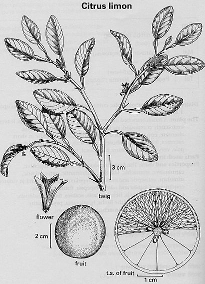

|
ECONOMICALLY
IMPORTANT PLANTS OF INDIA |
| Under-utilized Food and Fodder species and their wild relatives | Contributed by Ms.M.L Annapurna And Dr. Dhanapal, UAS, Bangalore |
Citrus limon L.Burm.f.

DIAGNOSTIC FEATURES
It is a medium sized
tree with the spreading crown, the new flushes are pigmented. Leaves are dark
green and leaf margins are sub serrated. Petioles medium-sized and narrowly
winged. Flower buds are pigmented and the pistil is densely dotted with oil
winged. Flower buds pigmented and pistil is densely dotted with oil islands.
Fruits oval to elliptic with pointed nipple. Fruit surface smooth, light yellow
and core solid; juice abundant and acidic. Seed cotyledons are white.
REPRODUCTIVE BIOLOGY
Breeding System
:
Phenology :
Lime and lemons put forth new flushes and blossoms throughout the year. They
do not require a resting period; they are harvested throughout the year. However,
the season of maximum harvest differs in different parts of the country. Heaviest
bloom usually occurs in March and April so that most of fruit is ready for harvest
in winter and spring.
Bloom to harvest varies from 9 to 14 months, depending on conditions. Trees
begin to bear in about 3 years from seed and in 18 months from budding.
Pollinators:Pollination is not a problem because
it develops parthenocarpically
Seed Biology :
Seed Germination:
Germination most rapid at 32°C in about two weeks. Plant seed 2-3.5 cm
deep, about 2.5 cm each way. Available water must be kept in soil around seed
at all times. Seedlings transplanted to nursery row about 18 months after seed
planted.
MAJOR PESTS & DISEASES
Pests:
Diseases:
Parts used
Fruits.
Distilled lemon oils used in soaps and cleaners,
in floor, furniture, and shoe polishes, and in household fly sprays. Oil of
petitgrain lemon, extracted from leaves, petioles and twiglets, is used in colognes,
perfumes, and soaps. Pectates help make paper coating, stabilizers used in manufacture
of latex, printing inks, and disintegrates for medicinal tablets. Citric acid
used in making citrates, dyes, and extracts; also used commercially by calico
printers to remove iron from patterns stamped with certain dyes. Juice and oil
also used in preserving or tenderizing fish, coloring vegetables, and in manufacture
of carbonated beverages, jams, and pastries. Citric acid is also important in
making mirrors, and its salts enter into the making of blue-prints.2 In many
places in Latin America, e.g., among Panamamian Kuna Indians, a very wholesome
salad dressing is prepared from lemon juice with hot pepper and onion or garlic,
a salubrious salad dressing we commend to obese North Americans. Essential oil
antibiotic to Bacillus, Meningococcus, and Typhus.103 The waxes contain antioxidant
compounds.
FOLK MEDICINE: Reported to be apertif, carminative, diaphoretic, digestive,
diuretic, rubefacient, stimulant, and stomachic; lemon is a folk remedy for
adenopathy, arteriosclerosis, cancer, colds, coma, diarrhea, dysentery, epilepsy,
fever, indurations, inflammation, pneumonia, rheumatism, scurvy, splenitis,
and stomachache.4-50 The lemon-pepper-onion/garlic salad dressing contains three
folk anticancer condiments, all of which have been shown to contain antitumor
compounds. Burns are helped by applying plain lemon juice. Lemon peel is considered
stomachic and rubefacient when applied externally. Lemon juice is an excellent
remedy for scurvy and in febrile and inflammatory affections; and has successfully
been employed in acute rheumatism, dysentery, diarrhea, and is a French remedy
for colds. Juice recommended as an antidote for poisonous Euphorbiaceae. Choco
Indians used straight lemon or lime juice for conjunctivitis.
Lemon oil is one of the most important citrus oil used for flavouring purposes
in soft drinks, baked foods, confectionery, etc. and is of good demand.
Propagation
From seed planting to planting budded tree in orchard requires 3-4 years; this
time reduced if bottom heat is used in seedbed. More often lemons are propagated
by layering or budding, in some areas beginning to yield in about 18 months.
Shield budding is most frequently used. A year or more from budding, young trees
are large enough for transplanting to orchard. During period following bud-insertion
and up to lifting of budded plants, regular operations, such as hand-picking
of citrus caterpillars, removal of root-stock sprouts, and suppression of weeds,
are necessary. Beds should not be heavily or frequently fertilized. Spontaneously
produced layers (suckers) root easily, as 'Nepali oblong' and 'Nepali round'
cvs. Cuttings of lemons also root easily. For irrigation, in India the basin
method is used whereby water is led in channels to tree basins, varying in size
according to age of tree. In California permanent furrows are used. Best to
apply enough water to soak 10-15 cm at each application. Trees usually planted
7-8 m apart each way, depending on ultimate size of tree. Union of bud and rootstock
should be above ground. Very little pruning required, except for dead wood,
which might harbor injurious fungi. In humid areas, lower branches should be
pruned enough to keep them from touching the ground.
GERMPLASM: Reported from the Indochina-Indonesian
and Mediterranean Centers of Diversity, lemon or cvs thereof is reported to
tolerate hydrogen fluoride, high pH, laterite, mild frost, slope, and virus.7
Lemon is said to be slightly more cold hardy than lime, less than orange.18
Major acid lemon cvs include: 'Berna' (Verna, Bernia, Vernia), most important
variety in Spain (90% of acreage), and also grown in Algeria and Morocco. 'Eureka',
originated in Los
Angeles, California, about 1858 from seed from Spain. Trees precocious, thornless,
overbearing,one of world's major lemon varieties. Clonal selections which are
most popular are: 'AlienCascade', 'Bears' (see also lime; peel rich in oil),
'Cook', 'Meek', 'Ross', 'Wheatley', and 'Thornton', 'Femminella ovale', oldest
and most important Italian lemon variety; still account for about 75% of lemons
grown in Italy; very susceptible to mal secco disease. 'Lisbon', of Portuguese
origin, vigorous, hardy, very productive, several clones in group which differ
some in tree characteristics. 'Villa Franca', not very important now, but some
clones are still grown. Sweet lemon varieties include: 'Dorshap', grown under
different names in various parts of world. Indigenous varieties in India are
Galgal and Jamberi, the rough lemon, much valued as rootstock for other citrus
species. Foreign varieties grown in India include: 'Eureka', 'Villa Franca',
'Lisbon', 'Italian seedless', 'Nepali oblong', 'Nepali Round', and 'Malta.'
Fruits resembling lemons include: 'Peretta' (C. peretta Risso), an old variety
used as a door-yard tree. 'Kama', an old Indian fruit, used as a rootstock.
'Meyer Lemon', has wider range of climatic adaptation than either lemon or lime
for which it is used as a substitute; most widely planted as dooryard tree;
banned from some citrus-growing areas because it can be a symptomless carrier
of certain viruses, particularly tristeza; virus-free clones available; fruit
too tender to withstand handling and shipping, so is not grown commercially.
'Rough Lemon' (Jamberi, Jatti khatti, Mazae lemon, Citronelle) (C jambhiri Lush.),
native to India, where there are at least 4 forms, including a sweet fleshed
one; specially important as rootstock in many parts of world. Two selections
are 'Eates' and 'Milam'; which are resistant to burrowing nematodes. 'Limettas'
(C. lemetto Risso) include three closely related fruits, the millsweet or so-called
sweet lemon, the Mediterranean or Tunisian sweet lime, and the Moroccan limetta
or Marrakesh limonette; all of local importance only. Probably lemon should
be considered as a satellite species of citron, probably of hybrid origin having
the citron and the lime as parent species. Lemon crosses readily with other
species of Citrus, yet when self-pollinated, reproduces itself from seed with
only small variations. Hybrids include: 'Lemonange' (C. limon X C sinensisi),
the Meyer lemon being the only one grown to any extent in United States; 'Lemonimes'
(C. limon X C. aurantifolia), best known iserrine lemon (C. aurantifolia 'Mexican'
X C, limon 'Genoa') has high resistance to lemon scab and wither tip; 'Lemondarins'
(C. limon X C. reticulatal), with probably the Otaheite orange,the "red
lemon", and the "white lemon" being hybrids of this cross.2 (2n=18)